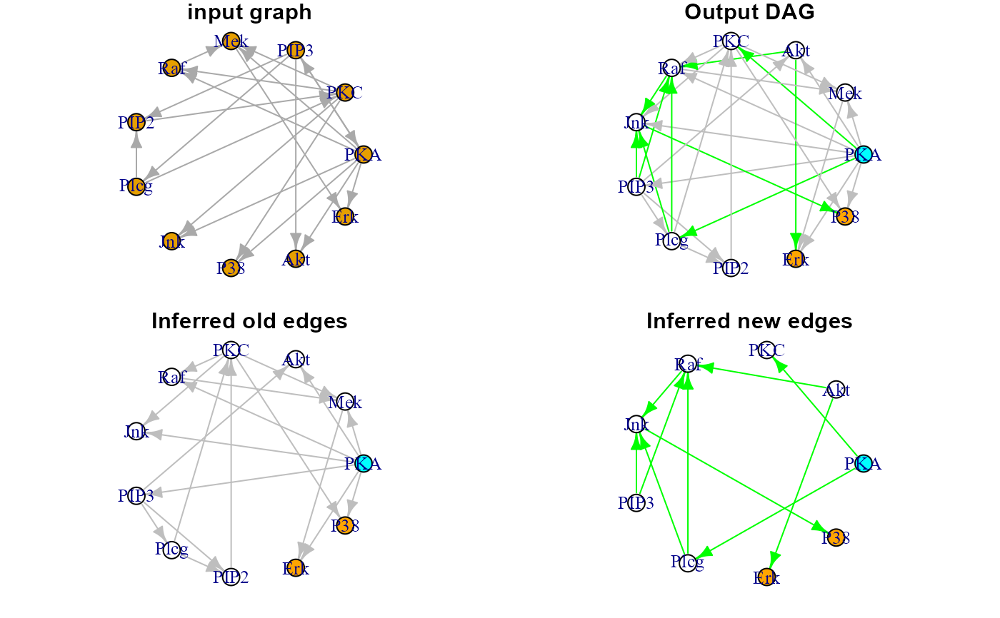

Extract the optimal DAG from an input graph, using the
LASSO-based algorithm, implememted in glmnet.
SEMdag( graph, data, gnet = NULL, d = 0, beta = 0, lambdas = NA, verbose = FALSE, ... )
| graph | An igraph object. |
|---|---|
| data | A matrix whith rows corresponding to subjects, and columns to graph nodes (variables). |
| gnet | Reference "global" network as an igraph object. If given, new edges will be added to the final DAG only if present in the reference network. |
| d | An integer value indicating the maximum length of indirect
interactions between pairs of nodes. If |
| beta | Numeric value. Minimum absolute LASSO beta coefficient for
a new interaction to be retained in the final model. By default,
|
| lambdas | A vector of regularization LASSO lambda values.
Cross-validation (n > 100) or BIC-based (n <= 100) optimal lambdas
for each response variable will be selected. If lambdas is NULL, the
|
| verbose | A logical value. If FALSE (default), the processed graphs will not be plotted to screen. |
| ... | Currently ignored. |
A list of 3 igraph objects:
"dag", the estimated DAG;
"dag.red", new estimated connections;
"dag.blue", connections preserved from the input graph.
The optimal DAG is estimated after node topological order,
using successive penalized (L1) regressions. If the input graph is not
acyclic, a warning message will be raised, and a cycle-breaking algorithm
will be applied (see graph2dag for details).
Output DAG edges will be colored in blue, if they were present in the
input graph, and in red, if they are new edges generated by LASSO
screening.
Shojaie A, Michailidis G (2010). Penalized likelihood methods for estimation of sparse high-dimensional directed acyclic graphs. Biometrika, 97(3): 519-538. <https://doi.org/10.1093/biomet/asq038>
Tibshirani R, Bien J, Friedman J, Hastie T, Simon N, Taylor J, Tibshirani RJ (2012). Strong rules for discarding predictors in lasso type problems. Royal Statistical Society: Series B (Statistical Methodology), 74(2): 245-266. <https://doi.org/10.1111/j.1467-9868.2011.01004.x>
Jana Jankova and Sara van de Geer (2015). Confidence intervals for high-dimensional inverse covariance estimation. Electronic Journal of Statistics, 9(1): 1205-1229. <https://doi.org/10.1214/15-EJS1031>
Mario Grassi mario.grassi@unipv.it
#> #> WARNING: the input graph is not acyclic ! #> Applying graph -> DAG conversion ... #> DAG conversion: TRUE#> NLMINB solver ended normally after 22 iterations #> #> deviance/df: 1.087236 srmr: 0.01240889 #> #> Brown's combined P-value of node activation: 0 #> #> Brown's combined P-value of node inhibition: 0 #># Graphs par(mfrow=c(2,2), mar=rep(1,4)) plot(sachs$graph, layout=layout.circle, main="input graph") plot(G$dag, layout=layout.circle, main = "Output DAG") plot(G$dag.blue, layout=layout.circle, main = "Inferred old edges") plot(G$dag.red, layout=layout.circle, main = "Inferred new edges")